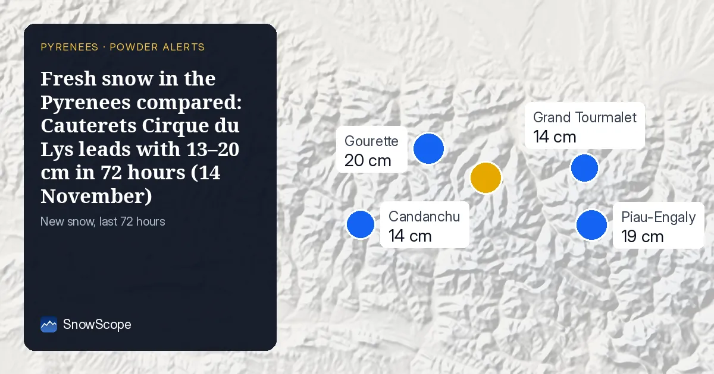

Fresh snow in the Pyrenees compared: Cauterets Cirque du Lys leads with 13–20 cm in 72 hours (14 November)
Three days of snow have pushed the white area across the Pyrenees from 910 km² on 12 November to 1,100 km² today. The pattern is split: snow stays only where it is cold enough, mostly above 2,340 m, while rain dominates lower down. At Cauterets Cirque du Lys the upper slopes hold 9 cm depth and took in 13–20 cm over the last 72 hours, the most in the range.
See the live snow forecast for Cauterets Cirque du Lys in the SnowScope appSnow depth, powder alerts and the 3D map, free.
Where the snow fell hardest
Cauterets Cirque du Lys caught 13–20 cm in the last 72 hours, with 12 cm arriving in the final 24 hours before this report. Three other resorts came close: Gourette took 20 cm, Piau-Engaly 19 cm and Candanchu 14 cm. The storm peaked on 14 November—the day this data comes from.
The snow count is striking: 19 of the 53 tracked Pyrenees resorts now hold snow on their upper slopes, up from a scattered 23 two days earlier. Ground coverage grew to 1,100 km², but the picture is fragile. By 17 November the forecast shows only 640 km² will remain, with just 16 resorts still showing snow high up. Warm air is already on its way.
| Resort | Snow depth | New snow, 72 h | Coming, next days | Top |
|---|---|---|---|---|
| Cauterets Cirque du Lys | 9 cm | 20 cm | 12 cm | 2,420 m |
| Piau-Engaly | 11 cm | 19 cm | 8 cm | 2,527 m |
| Gourette | 9 cm | 20 cm | 11 cm | 2,453 m |
| Candanchu | 5 cm | 14 cm | 12 cm | 2,238 m |
| Grand Tourmalet | 5 cm | 14 cm | 7 cm | 2,464 m |

Rain versus snow: a sharp split at 2,340 m
This is not a simple snowfall. Mixed rain and snow defines the event: above roughly 2,340 m you get snow; below that line, rain fell instead. At Cauterets Cirque du Lys the top stands at 2,420 m, so the summit caught snow while everything downslope turned to rain. The base at 1,725 m stayed dry.
Height matters enormously right now. At Cauterets Cirque du Lys the snow depth shrinks as you drop: 9 cm on the upper slopes near the top, but zero at mid-height (2,072 m) and at the base. This altitude gradient is why early-season snow reports always come with an 'up high' caveat. Ski the top of the mountain if you want to find it.

What comes next
Forecasts for the next few days show 13–20 cm more at Cauterets Cirque du Lys by 17 November, 16–20 cm at Gourette and 12 cm at Candanchu. The range widens the further ahead you look, so confidence drops. After 17 November the system moves away and the region warms.
Crucially, the freezing level climbs fast. On 16 November it ranges from 2,470 m up to 4,240 m across the day—already above Cauterets Cirque du Lys's summit. By 17 November it jumps to 3,360 m to 4,220 m, leaving the highest slopes as the only place snow survives. Any fresh snow arriving on wet slopes hardens overnight and compacts, so the depth you see today shrinks tomorrow.
How reliable are these numbers?
Fresh-snow amounts are estimates, not measurements from a station. The uncertainty is large: each resort value could be off by several centimetres. The ranking—which resort got the most—is more trustworthy than the exact totals. That is why we give ranges like 13–20 cm instead of a single number.
The snow line position (2,340 m) also carries uncertainty. Actual conditions on the mountain may vary by slope, wind exposure and the precise timing of the rain-snow boundary. When you arrive, check what you find at your chosen height and aspect.
Timing and snow quality
Powder lasts longest on north-facing slopes above 2,400 m where the sun barely reaches in mid-November. South-facing terrain loses the bonus snow within hours once the air warms. The best window is early morning before the sun and crowds arrive.
Wind has also shaped the snow. Drifts have built on lee slopes over the last 72 hours, while ridges and exposed areas may be scoured to thin cover. If you are venturing off-piste, understand where the wind has concentrated the snow and where rocks may still be close to the surface.
Safety notes
The avalanche danger level across the Cauterets Cirque du Lys area is rated 1 on the 5-level scale today. This is the lowest rating. Even so, fresh snow on steep slopes can change conditions fast, especially if you trigger wet-snow sloughs as the day warms.
Before skiing off-piste or going touring, always check the latest official avalanche bulletin from Météo-France. Conditions can shift between this report date and when you travel. Snow on the SnowScope map does not mean the resort is open: verify lift status and opening dates on the resort website before you drive.
Tips for skiers
- Head high and go early. Snow above 2,400 m on north-facing slopes keeps longest. The first tracks often beat the sun by hours.
- Watch the freezing level. By 16 November it climbs above the summits during the day, so afternoon snow turns to rain even at the top. Go in the morning or not at all.
- Expect thin coverage. Nine centimetres on the upper slopes is real but delicate. Rocks may still poke through; probe before committing to blind descents.
- Read the official avalanche bulletin before any off-piste or touring plan (Météo-France – Bulletin d'estimation du risque d'avalanche).
- Enable powder alerts in the SnowScope app to know the next time fresh snow arrives at your chosen resort.
About these numbers
Resort snow depths are the deepest snow on the resort's upper slopes on the date shown; they are estimates for an area, not a measurement at one point. Forecasts can change. Always read the official avalanche bulletin before going off-piste.
Official avalanche bulletins: Météo-France – Bulletin d'estimation du risque d'avalanche
Cite this report
For research, teaching or the press: the numbers and charts are free to reuse under CC BY 4.0 with this citation.
SnowScope (2026), Fresh snow in the Pyrenees compared: Cauterets Cirque du Lys leads with 13–20 cm in 72 hours (14 November), https://snowscope.app/blog/en/2026/11/pyrenees-cauterets-cirque-du-lys-fresh-snow-powder-alert-14-november-2026.html, accessed 2026-11-14
SnowScope (Atlas Labs). (2026, November 14). Fresh snow in the Pyrenees compared: Cauterets Cirque du Lys leads with 13–20 cm in 72 hours (14 November). SnowScope snow reports. https://snowscope.app/blog/en/2026/11/pyrenees-cauterets-cirque-du-lys-fresh-snow-powder-alert-14-november-2026.html
BibTeX
@misc{snowscope2026pyreneescauteretscirqued,
author = {{SnowScope (Atlas Labs)}},
title = {Fresh snow in the Pyrenees compared: Cauterets Cirque du Lys leads with 13–20 cm in 72 hours (14 November)},
year = {2026},
month = nov,
howpublished = {\url{https://snowscope.app/blog/en/2026/11/pyrenees-cauterets-cirque-du-lys-fresh-snow-powder-alert-14-november-2026.html}},
note = {Published 2026-11-14 12:53 UTC; accessed 2026-11-14}
}· CC BY 4.0 · Methods, data and tools →
Cauterets Cirque du Lys: snow and temperature by height, this winter vs last (tools) →
Follow Cauterets Cirque du Lys
Free: a message when fresh snow is coming, and the forecast every morning.
More snow reports

Cauterets offers 25 km of runs for 46 EUR, but our snow history shows that the best chance for cover is the last week of December.

Piau-Engaly leads the forecast with 37 cm of new snow by 13 November; 24 cm is expected on 12 November.

The Pyrenees will gain up to 63 cm of new snow in the next 14 days, with 70% arriving before 25 November. Data from 18 November.